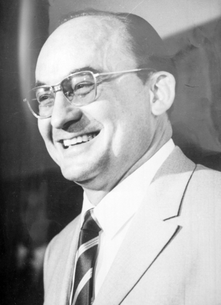

Luis Echeverría Álvarez es un político y abogado mexicano que se desempeñó como presidente de México del 1 de diciembre de 1970 al 30 de noviembre de 1976.
En este periodo se diversificaron los servicios educativos, aumentó el número de escuelas y se reformaron los planes de estudio en la educación básica. Se publicó una Ley Federal de Educación que sustituyó a la de 1941 y se organizó el sistema educativo nacional.
Aunado a la crisis internacional provocada por la escasez de petróleo, aumentó de forma considerable el gasto público, emitiendo papel moneda sin valor y contratando deuda. Durante su mandato se dio la primera crisis económica desde el inicio del llamado "Milagro Mexicano". Además, se lanzó a la compra de empresas al borde de la quiebra para sostener los empleos, pero a costa de ineficiencias y corrupción. Durante su gobierno se abandonó el tipo de cambio fijo que existía desde 1954, de $12.50 por dólar, al final de su sexenio llegó a los $ 25.50 por dólar. La deuda externa aumentó de los manejables 6,000 millones de dólares que había heredado Díaz Ordaz a más de 20,000 millones.
Realizó viajes a países de Europa, Asia, Oceanía, África y América Latina. Su gobierno fue muy cercano a los regímenes socialistas de Chile y Cuba. Dió asilo político a gran número de exiliados provenientes de las dictaduras de América del Sur. Tuvo mano dura con los movimientos de izquierda nacional. Desde la presidencia promovió la Declaración de México sobre la igualdad de la mujer y su contribución para el desarrollo y la paz, proclamada por la Conferencia Mundial del Año Internacional de la Mujer en la que se equiparó al sionismo con el apartheid sudafricano y como una forma de discriminación racial. Lo anterior produjo un boicot turístico de la comunidad judía estadounidense en contra de México que visibilizó conflictos internos y externos de las políticas de Echeverría.
Como consecuencia de las numerosas movilizaciones y protestas estudiantiles y juveniles que surgieron durante su presidencia, el PRI y el Presidente Echeverría intentaron neutralizar a la juventud altamente politizada. A finales de 1971, luego de la Matanza de Corpus Christi y el Festival Rock y Ruedas de Avándaro, Echeverría decretó la prohibición de prácticamente todo tipo de música de rock grabada por grupos nacionales. La prohibición (también conocida popularmente como el "Avandarazo", ya que surgió en respuesta al Festival de Avándaro, el cual había sido duramente criticado por los sectores conservadores del PRI) incluyó la restricción de grabar casi cualquier tipo de música de rock, así como la prohibición de su venta en tiendas de música; también fueron prohibidos los conciertos de rock masivos y la emisión radial de música de rock. La prohibición se mantuvo por varios años, y solo comenzó a ser levantada gradualmente en los años 1980.